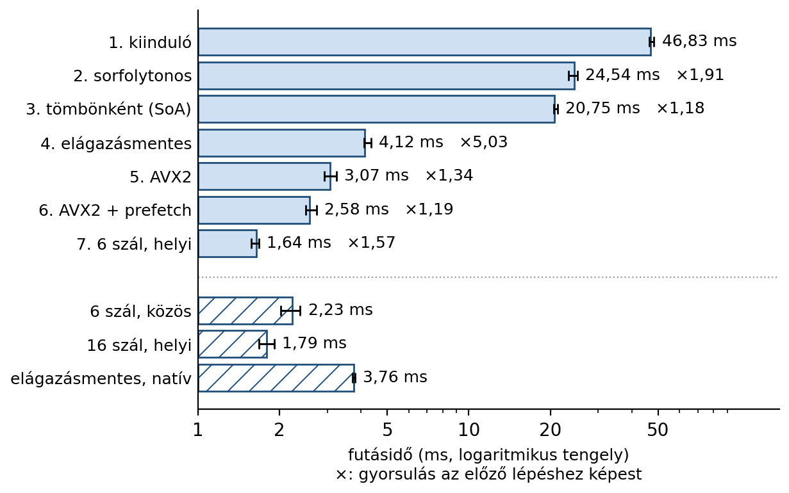

Egy 2048 × 2048 képpontos képből világossági maszkot számolunk. Minden képpontra ; ha , a kimenet , és a világos képpontok számlálója nő, különben a kimenet 0. A feladat tíz sor C++. Az első, kézenfekvő változat a könyv gépén 46,83 ms alatt fut le, a végső 1,64 ms alatt: a gyorsulás 28,5-szörös, ugyanazzal az algoritmussal, ugyanazzal az eredménnyel.
Az esettanulmány nem a végeredményről szól, hanem az útról. A lépéseket az ábrák számozásával (1–7. pont) hivatkozzuk. Minden lépés előtt megmondjuk, mit várunk és miért, utána pedig mérünk. Meglátjuk, melyik lépés mennyit hozott, melyik jóval kevesebbet a vártnál, melyik semmit, és honnan tudjuk, hogy a végén már nincs érdemi tartalék.
A teljesítmény javítása nem trükkök gyűjtögetése, hanem ismétlődő kör: mérés → modell (roofline, top-down) → hipotézis → egyetlen változtatás → újramérés. Az alábbi ábra a kör eredménye lépésről lépésre, a mellékkísérletekkel együtt.

A leghosszabb ugrás nem a vektorizálás és nem a többszálúság, hanem az elágazás megszüntetése. A következő ábra ugyanezeket a lépéseket a A roofline-modell síkján mutatja: a vízszintes tengely az aritmetikai intenzitás (FLOP/bájt), a függőleges a teljesítmény. Egy pont és a fölötte húzódó tető távolsága az elvi tartalék.
Definíció. A mérésvezérelt optimalizálás olyan eljárás, amelyben minden változtatást megelőz egy mérésre és modellre alapozott, cáfolható hipotézis, és követ egy ugyanolyan körülmények között végzett újramérés.
A ciklus egy fordulója:
A jegyzőkönyv sablonja, amelyet a későbbi projektekben is használunk:
| Mező | Ebben a tanulmányban |
|---|---|
| gép, magtípus | i5-13400F, egyszálú mérés P-magon (2-es CPU) |
| fordító, kapcsolók | g++ 15.2.0, -O2, vektorizálás kikapcsolva; a natív
mérésnél -O3 -march=native |
| bemenet | 2048 × 2048 véletlen egész képpont, mag: 1 |
| ismétlés, statisztika | 15 ismétlés, medián, 95%-os bootstrap-intervallum; a teljes sorozat hétszer megismételve |
| frekvenciaszabályozó | powersave (intel_pstate) |
| terhelés | a mérés elején az 1, 5 és 15 perces terhelésátlag 1,29, 3,05 és 5,87; háttérben böngésző és asztali programok |
| ellenőrzés | a kimenet és a számláló a referencia-eredménnyel egyezik |
A terhelés sor kényelmetlen, mégis be kell írni. A nagyobb 5 és 15 perces érték a megelőző, többszálas mérési sorozatok lecsengése: a gép a mérés idejére nagyjából tétlen volt, de nem „laboratóriumi” állapotban. A háttérben futó programok és az órajel változása elmozdíthatják a számokat; hogy mennyire, azt a Kód szakasz ismételt futásai mutatják meg.
Továbbvitt eredmény. A mérésvezérelt ciklus: alapmérés → roofline- és top-down-elhelyezés → számszerű hipotézis → egyetlen változtatás → újramérés intervallummal; a jegyzőkönyv rögzíti a gépet, a fordítót, a bemenetet, a statisztikát, a körülményeket és az ellenőrzést; a negatív eredmény is eredmény. Ezt a 2–3. záróprojekt: cache-szimulátor és mikrobenchmark-sorozat és a Vegyes vizsgafeladatsor alkalmazza.
A kiinduló változat (code/bench/bench_grid.cpp) egy 32
bájtos struktúratömbön dolgozik, amelyben a három csatorna mellett nem
használt mezők is vannak, és oszlopok szerint járja be a képet:
for (size_t x = 0; x < w; ++x)
for (size_t y = 0; y < h; ++y) {
const size_t i = y * w + x;
const float l = WR * p[i].r + WG * p[i].g + WB * p[i].b;
if (l > THR) {
out[i] = (l - THR) * GAIN;
++count;
asm volatile(""); // megtiltja az if-átalakítást
} else {
out[i] = 0;
}
}Az üres asm sor tanulmányi eszköz: megakadályozza, hogy
a fordító magától elágazásmentes kódot készítsen. Egy képpont 7 hasznos
FLOP (három szorzás, két összeadás, egy kivonás, egy szorzás). A
mozgatott hasznos adat: egy 32 bájtos struktúra beolvasása és 4 bájt
kimenet, tehát
FLOP/B. A memóriatető az egy szálon mért olvasási sávszélességgel (27,1
GB/s)
GFLOP/s, a mért teljesítmény ennek mindössze 12%-a. A tartalék tehát
nagy, de hogy miért marad el, a tető nem mondja meg.
Hipotézis a sorrendre. Oszlopfolytonosan két egymást követő hozzáférés KiB távolságra van. Ez a Cache-szervezés: leképezés és címbontás szerint a lehető legrosszabb: a kettőhatvány lépésköz kevés halmazba tereli a sorokat. A P-mag cache-geometriájára futtatott szimuláció (a Kód szakaszban) szerint oszlopfolytonosan képpontonként kb. 68 bájt jön a memóriából, sorfolytonosan pontosan 36. A modell LRU-t és egyszerű halmazleképezést feltételez, a valódi utolsó szint eltérhet (ellenőrizendő), és a címfordítás (TLB) terhelése is nagyobb: oszlopfolytonosan minden képpont új lapra esik.
Mérés: 24,54 ms, a gyorsulás 1,91 [1,85; 2,02]. A mozgatott bájtok aránya (1,9) ezzel jól egyezik, de az egyezés nem bizonyíték: a prefetch és a TLB hatását nem választottuk szét.
Hipotézis az elrendezésre. Külön r,
g, b tömbökkel (struktúra helyett tömbök
struktúrája, SoA) csak a hasznos 16 bájt mozog, 2,25-ször kevesebb. A
roofline szerint ennyi lehetne a nyereség, ha a memória
lenne a korlát. De nem az: a sorfolytonos változat (2. pont) a tetőnek
csak negyedén van. A mérés: 20,75 ms, gyorsulás mindössze 1,18 [1,12;
1,22]. A hipotézis megbukott – és ez hasznos: megtudtuk, hogy a szűk
keresztmetszet máshol van.
Top-down szemlélet. A bemenet véletlen, a
feltétel a képpontok 49,6%-ában igaz. Egy kétbites vagy gshare becslő
ilyen sorozatot kb. 50%-ban eltévesztene (a Kód szakasz szimulációja); a
hipotézisünk tehát az, hogy a domináns slotveszteség a rossz spekuláció.
A lefordított kód ellenőrzése (g++ -S) igazolja a valódi
elágazást (comiss + ja), míg az elágazásmentes
változatban maximum-, összehasonlító- és maszkoló utasítások
(cmpnltss, andps, seta)
állnak:
const float d = WR * r[i] + WG * g[i] + WB * b[i] - THR;
out[i] = std::max(d, 0.0f) * GAIN;
count += d > 0.0f;Mérés: 4,12 ms, gyorsulás 5,03 [4,86; 5,18]. Ciklusban számolva (4,43 GHz becsült órajel) egy képpont 21,9 helyett 4,4 ciklus. Ha a teljes 17,6 ciklusos különbséget a tévesztéseknek tulajdonítjuk, egy tévesztés kb. 35 ciklus – ez felső becslés, mert a két ciklus utasításai és függőségei is különböznek (egy egyszerűbb elágazásos ciklusból ugyanezen a gépen kb. 27 ciklus adódik, lásd a 2–3. záróprojekt: cache-szimulátor és mikrobenchmark-sorozat gépjellemzését).
Figyeld meg az Amdahl-szemléletet: ha egy lépés -szeres gyorsulást ad, a kiküszöbölt rész az előző időnek legalább hányada volt: itt legalább 80%.
Hipotézis. Az AVX2 egy utasítással nyolc
float-ot dolgoz fel (AVX és NEON a
gyakorlatban), a számítás elvi gyorsulása 8. A roofline azonban
figyelmeztet: az egyszálas memóriatető
GFLOP/s, az elágazásmentes változat (4. pont) már 7,12-en áll. Időben: 4
194 304 képpont · 16 bájt = 67,1 MB, 27,1 GB/s-mal legalább 2,47
ms. Egy szálon tehát legfeljebb
-szeres
gyorsulás várható, nem nyolcszoros.
Mérés: 3,07 ms, gyorsulás 1,34 [1,30; 1,43] – a tető
81%-a. A fordító is képes ugyanerre: az elágazásmentes (4. pont) kód
-O3 -march=native kapcsolóval magától vektorizálódik
(ymm regiszterek, vmaxps). Ez a változat a
főfutásban 3,76 ms alatt futott, tehát lassabban a kézi AVX2-nél; a
sorozat ismétléseiben viszont többször gyorsabb volt nála (lásd a Kód
szakaszt). A kettő sorrendjét ez a mérés nem dönti el.
Szoftveres prefetch (512 bájttal előre): 2,58 ms, a mediánok aránya 1,19 [1,10; 1,24], a minimumoké viszont csak 2,59/2,46 ≈ 1,05. Sorfolytonos bejárásnál a hardveres prefetch elvileg elég (Nem blokkoló cache, memóriaszintű párhuzamosság és prefetch), ráadásul a hét ismétlés egyikében a prefetch-es változat lassabb volt; ezt a nyereséget ezért nem tekintjük bizonyítottnak. A pont a tető 96%-án áll – egy szálon vége az útnak.
Hipotézis. Hat P-magos szállal a memóriatető 46,7 GB/s-ra emelkedik (mért olvasási érték), tehát a 67,1 MB mozgatása legalább 1,44 ms. A képet sorok szerint osztjuk fel a szálak között.
Először egy tipikus hibát követünk el szándékosan: a szálak darabszámlálói egy tömb szomszédos, 8 bájtos elemei, és minden vektor után frissülnek. A hat számláló egy 64 bájtos sorban van, a sor tulajdonjoga magról magra vándorol (A koherencia ára: ping-pong és false sharing).
| Változat | medián | |
|---|---|---|
| 6 szál, közös sorban álló számlálók | 2,23 ms | mt_shared |
| 6 szál, szálhelyi számláló | 1,64 ms | mt_local |
A javítás gyorsulása 1,36 [1,22; 1,47]. A helyi számlálós változat (7. pont) a tető 87%-án áll, és a prefetch-es egyszálas változathoz (6. pont) képest 1,57-szer gyorsabb [1,51; 1,70].
Hordozhatóság. Minden szám egyetlen gépről származik, egyetlen fordítóval. Várhatóan hordozható a módszer és a hibák iránya (oszlopfolytonos bejárás, véletlen elágazás, false sharing), nem hordozhatók az arányok: más becslőnél, memóriasávszélességnél, magösszetételnél a lépések sorrendje is változhat.
A teljes gyorsulás a lépések szorzata:
A szorzat azt mondja, hogy az egymásra épülő lépések hatása szorzódik, nem összeadódik (a kerekítetlen tényezőkkel 28,5 adódik). A tényezők azonban ebben a sorrendben érvényesek: más sorrendben ugyanaz a változtatás más tényezőt adna (3. feladat).
Az utolsó lépés tartaléka: , azaz legfeljebb 14% maradt ezen az elrendezésen. Ennél nagyobb gyorsuláshoz kevesebb bájtot kellene mozgatni (például 8 bites csatornákkal), vagy nagyobb sávszélesség kellene – az előbbi már az adatformátum áttervezése, ami kívül esik e tanulmány keretein.
import sys; sys.path.insert(0, "code")
from archkit import perf
meta, rows = perf.read_bench_csv("figures/data/ca081-lepesek.csv")
S = {(r["build"], r["step"], r["threads"]): perf.parse_samples(r["samples"]) for r in rows}
chain = [("base", 1), ("order", 1), ("soa", 1), ("branchless", 1), ("simd", 1),
("prefetch", 1), ("mt_local", 6)]
beta = {1: 27.1267e9, 6: 46.7424e9} # mért olvasási sávszélesség (ca051-stream)
N, total, prev = 2048 * 2048, 1.0, None
print("lépés szál ms gyorsulás [95%] GFLOP/s tető%")
for step, t in chain:
s = S[("novec", step, t)]
ms = perf.quantile(s, 0.5)
nbytes = 36 if step in ("base", "order") else 16
pi = 12.5e9 if step in ("base", "order", "soa", "branchless") else 145e9 * t
perf_now = 7 * N / (ms * 1e-3)
roof = perf.roofline(7 / nbytes, pi, beta[t])
speed = ""
if prev:
r, lo, hi = perf.bootstrap_ratio_ci(prev, s, n_boot=4000)
speed, total = f"{r:5.2f} [{lo:.2f}; {hi:.2f}]", total * r
gf, pct = perf_now / 1e9, 100 * perf_now / roof
print(f"{step:11}{t:5}{ms:7.2f} {speed:19}{gf:8.2f}{pct:7.0f}")
prev = s
print(f"teljes gyorsulás: {total:.1f}")
r, lo, hi = perf.bootstrap_ratio_ci(S[("novec", "mt_shared", 6)], S[("novec", "mt_local", 6)],
n_boot=4000)
print(f"false sharing javítása: {r:.2f} [{lo:.2f}; {hi:.2f}]")lépés szál ms gyorsulás [95%] GFLOP/s tető%
base 1 46.83 0.63 12
order 1 24.54 1.91 [1.85; 2.02] 1.20 23
soa 1 20.75 1.18 [1.12; 1.22] 1.41 12
branchless 1 4.12 5.03 [4.86; 5.18] 7.12 60
simd 1 3.07 1.34 [1.30; 1.43] 9.57 81
prefetch 1 2.58 1.19 [1.10; 1.24] 11.39 96
mt_local 6 1.64 1.57 [1.51; 1.70] 17.89 87
teljes gyorsulás: 28.5
false sharing javítása: 1.36 [1.22; 1.47]A „tető%” oszlop a megállási szabály: amíg alacsony, van tartalék; 90% körül már a tető mozdításán (több sávszélesség, kevesebb bájt) kell gondolkodni.
A 95%-os bootstrap-intervallum egyetlen futáson
belüli bizonytalanságot mér. Azt nem tartalmazza, hogy
a program másik indításakor más fizikai lapokra kerülhet az adat, más
órajelen futhat a mag, vagy éppen dolgozik a háttérben valami. Ezért a
teljes sorozatot hétszer lefuttattuk (a ca081-ismetles.csv
a futások mediánjait gyűjti; az egyik futás a fenti főfutás):
_, reps = perf.read_bench_csv("figures/data/ca081-ismetles.csv")
M = {(r["run"], r["build"], r["step"], r["threads"]): r["median_ms"] for r in reps}
runs = sorted({r["run"] for r in reps})
def span(a, b):
v = [M[(i, *a)] / M[(i, *b)] for i in runs]
return f"{min(v):.2f} – {max(v):.2f}"
keys = [("novec", s, t) for s, t in chain]
for old, new in zip(keys, keys[1:]):
print(f"{old[1]:>10} → {new[1]:10} {span(old, new)}")
print(f"teljes gyorsulás {span(keys[0], keys[-1])}")
print(f"közös / helyi, 6 szál {span(('novec', 'mt_shared', 6), keys[-1])}")
native = ("native", "branchless", 1)
print(f"kézi AVX2 / natív {span(('novec', 'simd', 1), native)}")
v = [M[(i, *native)] for i in runs]
print(f"natív futásidő {min(v):.2f} – {max(v):.2f} ms") base → order 1.82 – 2.18
order → soa 1.01 – 1.18
soa → branchless 4.68 – 5.31
branchless → simd 1.34 – 1.91
simd → prefetch 0.95 – 1.19
prefetch → mt_local 1.38 – 2.23
teljes gyorsulás 27.16 – 38.81
közös / helyi, 6 szál 1.22 – 1.64
kézi AVX2 / natív 0.82 – 1.15
natív futásidő 2.26 – 3.76 msA tartományok sokkal szélesebbek, mint a főfutás intervallumai. A sorrendcsere és az elágazásmentesítés hatása minden futásban egyértelmű. Az SoA és a prefetch hozama olyan kicsi, hogy némelyik futásban eltűnik; a vektorizálás és a többszálúság nyeresége megmarad, de a mértéke jelentősen változik. A kézi AVX2 és a natív fordítás sorrendje pedig futásonként megfordul. A gyors, memóriakorlátos változatok néhány milliszekundumos ideje a legérzékenyebb; a szóródás okát (laphelyek, órajel, háttérterhelés) nem választottuk szét (ellenőrizendő).
from archkit import cache
def misses(layout, by_column, lines=32):
W = 2048
levels = [cache.Cache(size=size, block=64, ways=ways, addr_bits=48)
for size, ways in ((48 << 10, 12), (1280 << 10, 10), (20 << 20, 10))]
h = cache.Hierarchy(levels, hit_times=[1, 1, 1], mem_time=1)
for a in range(lines):
for b in range(W):
i = b * W + a if by_column else a * W + b
if layout == "aos":
for off in (0, 4, 8):
h.access(i * 32 + off, False, 0, 4)
else:
for k in range(3):
h.access((k << 28) + i * 4, False, 0, 4)
h.access((7 << 28) + i * 4, True, 0, 4)
return [c.stats.misses / (lines * W) for c in levels]
for label, args in [("AoS, oszlop", ("aos", True)), ("AoS, sor", ("aos", False)),
("SoA, sor", ("soa", False))]:
m = misses(*args)
print(f"{label:12} L1/L2/L3 hiba/képpont: " + " ".join(f"{v:.3f}" for v in m)
+ f" memóriából {64 * m[-1]:5.1f} B")AoS, oszlop L1/L2/L3 hiba/képpont: 2.000 2.000 1.070 memóriából 68.5 B
AoS, sor L1/L2/L3 hiba/képpont: 0.562 0.562 0.562 memóriából 36.0 B
SoA, sor L1/L2/L3 hiba/képpont: 0.250 0.250 0.250 memóriából 16.0 Bfrom archkit import bpred, cache as c_mod
rng = c_mod.XorShift32(1)
def bright(): # 8·L = 2r + 5g + b > 8·128
r, g, b = (rng.randrange(256) for _ in range(3))
return 2 * r + 5 * g + b > 1024
seq = "".join("T" if bright() else "N" for _ in range(50_000))
for p in (bpred.Bimodal(1024), bpred.GShare(10)):
res = bpred.evaluate(p, seq)
print(f"{p.name}: tévesztési arány {100 * res.miss_rate:.1f}%")bimodal: tévesztési arány 50.1%
gshare: tévesztési arány 50.0%Mindhárom eredmény modell: a cache-szimuláció a P-mag névleges geometriáját használja, a becslők pedig tankönyvi változatok, a valódi processzoré ennél összetettebb.
A Szemlélet szakasz roofline-ábrájának interaktív változatában léptethetsz a pontok között.
mt_shared változatban minden
szál 8 képpontonként ír a közös sorba. Becsüld meg, hány ilyen írás jut
egy szálra hat szálnál, és mennyi többletidő jut egy írásra.bench_grid programot a saját gépeden 1 és annyi szállal,
ahány fizikai magod van; olvasd be a CSV-t, és add meg minden lépés
gyorsulását intervallummal. Írj jegyzőkönyvet. A feldolgozó kódot a
könyv adatain próbáld ki: számold ki a natív és a kézi AVX2-változat
arányát.A rácskernel 46,83 ms-ról 1,64 ms-ra gyorsult (28,5-szer). A sorfolytonos bejárás 1,91, az SoA csak 1,18, az elágazásmentesítés 5,03, a vektorizálás 1,34, a prefetch bizonytalan 1,19, a hat szál szálhelyi számlálóval 1,57. A roofline megmutatta, mikor ért véget egy irány: egy szálon a tető 96%-án, hat szálon 87%-án. A mérésvezérelt ciklus: alapmérés, roofline- és top-down-elhelyezés, számszerű hipotézis, egy változtatás, újramérés intervallummal, jegyzőkönyv a körülményekkel. A negatív és bizonytalan eredményeket is rögzítjük; a futások közötti szóródás nagyobb lehet a futáson belüli intervallumnál, ezért a kis különbségeket ismételt sorozattal kell igazolni. Ezt a módszert viszi tovább a mikrobenchmark-projekt és a vizsgafeladatsor.
1. Legalább , azaz kb. 80%. Ha a lépés csak az idő 60%-át érinti, még végtelen gyorsítással is legfeljebb -szeres lehet a gyorsulás (Amdahl és Gustafson törvénye); a mért 5,03 tehát kizárja ezt.
2. ms. Az AoS-változat hat szálon sem lehet gyorsabb ennél (a modell szerint), tehát 1,64 ms nem érhető el.
3. Egy szálon ms az alsó korlát, tehát az SoA-lépés a 2,58 ms-hoz képest legalább -szeres hozamú. Ugyanaz a lépés a lánc elején 1,18-at hozott: egy javítás értéke attól függ, hol jár a kernel.
4. : a 4. pont ideje osztva a memóriamozgatás alsó korlátjával. A mérés 1,34 (a prefetch-csel együtt ), vagyis a becslés felső korlátként helyesnek bizonyult.
5. Egy szálra írás jut. A többletidő ms, írásonként kb. 6,7 ns. Ez egy, a koherencia miatt másik magtól visszaszerzett sor nagyságrendje; A koherencia ára: ping-pong és false sharing mérésében a folyamatos atomikus növelés műveletenként még többe kerül, mert ott nincs a közbeiktatott vektormunka.
6. A mérés vázlata: make -C code/bench,
majd
bench_grid --cpu <P-mag> --cpus <fizikai magok> --threads <n> --size 2048 --reps 15,
külön natív fordítással a branchless lépésre; a CSV-t
fájlba irányítva az archkit.perf.read_bench_csv olvassa.
Jegyzőkönyv: CPU, magtípus, fordító és kapcsolók, ismétlés, terhelés. Az
arány a könyv adataira:
r, lo, hi = perf.bootstrap_ratio_ci(S[("novec", "simd", 1)], S[("native", "branchless", 1)],
n_boot=4000)
print(f"kézi AVX2 / natív: {r:.2f} [{lo:.2f}; {hi:.2f}]")kézi AVX2 / natív: 0.82 [0.78; 0.86]Az 1-nél kisebb arány azt mondja, hogy a főfutásban a kézi változat gyorsabb volt a natív fordításnál, és a szűk intervallum magabiztosnak látszik. A hét futás arányai viszont 0,82 és 1,15 között szórtak (Kód szakasz): a saját méréseden se fogadj el sorrendet egyetlen futás alapján.